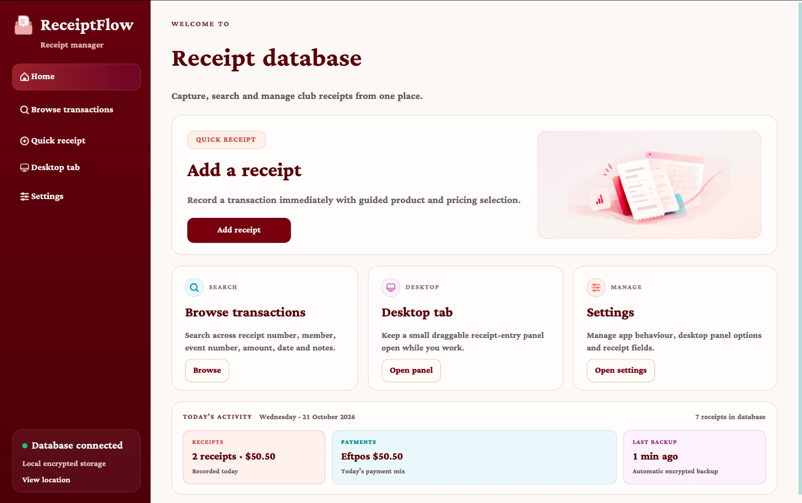
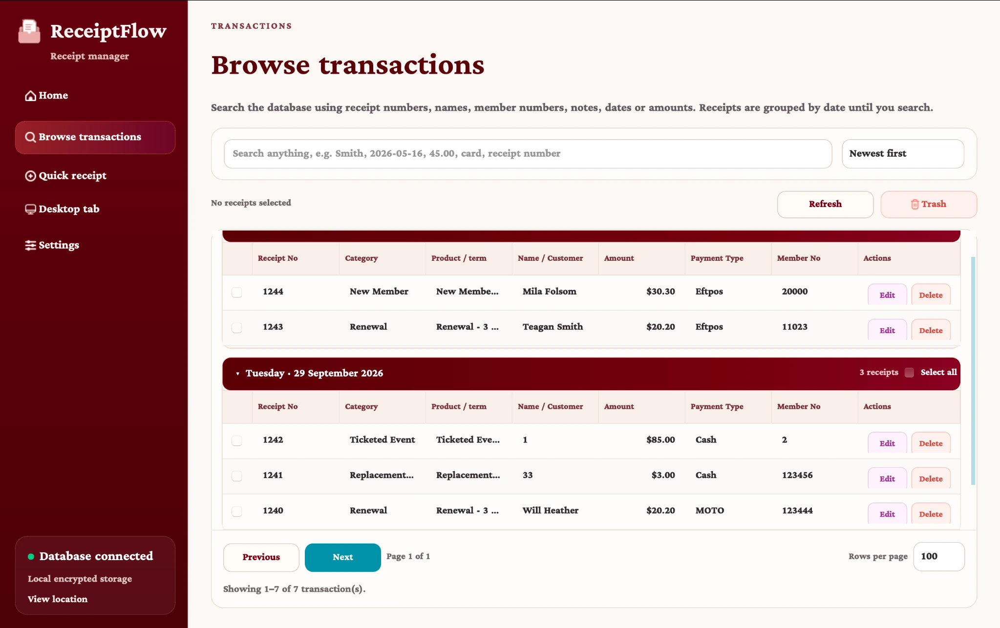
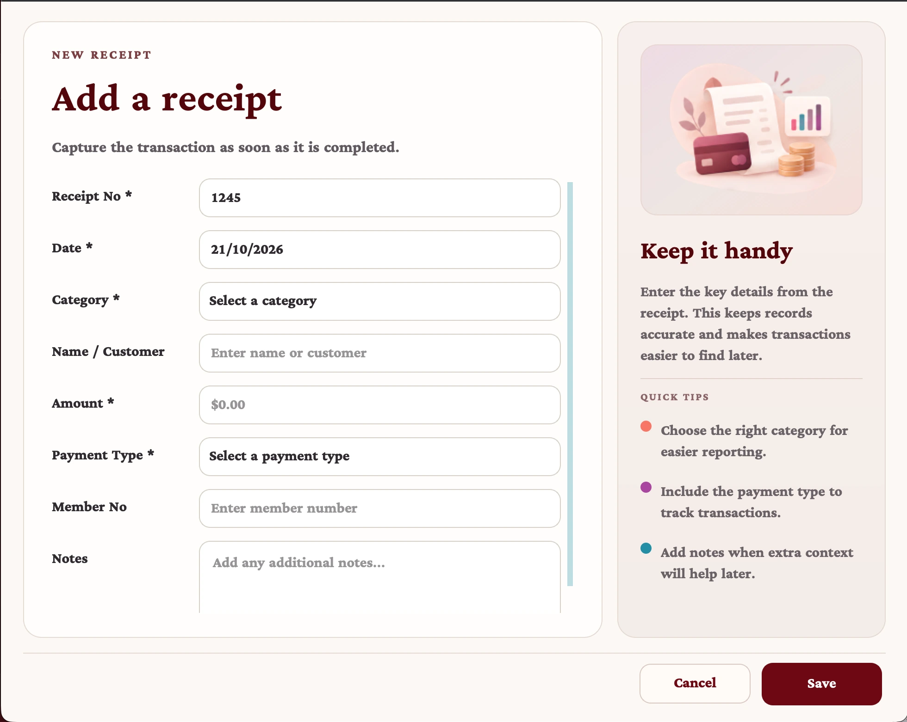
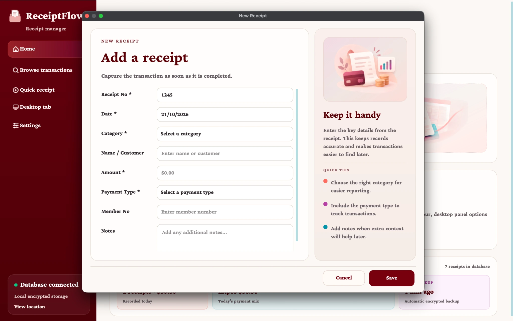

Guided receipt entry
Category-first selections keep forms manageable. Common membership and merchandise choices can populate the relevant price, while function transactions can include an event reference.
From manual receipt processing to a purpose-built desktop application. ReceiptFlow brings transaction entry, searchable records and day-to-day administration into one straightforward tool for any small business.
One clear starting point for recording a receipt, finding a transaction or adjusting the application. The screenshots show the working desktop interface with fictional demonstration data.

A busy club processes different types of payments, from memberships and replacement cards to functions, merchandise and poppy sales. A spreadsheet-based process left staff navigating manual entry and scattered records when they needed something quick and dependable.
I developed ReceiptFlow to turn that process into a dedicated desktop experience: clear choices at the point of entry, one persistent source of transaction data, and a practical way to find information later.
The interface focuses on a few common tasks instead of asking users to navigate a spreadsheet or configure every transaction from scratch.
Category-first selections keep forms manageable. Common membership and merchandise choices can populate the relevant price, while function transactions can include an event reference.
SQLite provides structured storage for receipt records. CSV and Excel imports help bring existing transaction data into the application without relying on multiple spreadsheets.
A dedicated Browse view supports searching, sorting and date-based grouping. Results can be exported to CSV when records are needed outside the application.
Configurable fields and application settings help keep the day-to-day interface focused while giving the underlying workflow room to evolve.
From entering new transactions to finding past receipts, the screens were shaped around routine staff tasks. Select any screenshot to inspect the full-resolution view.



All names, membership numbers, transactions and amounts shown in the screenshots are fictional demonstration data.
During the move to the updated Windows application, 455 historical receipts were successfully loaded from the previous version. That migration was an important part of making the new interface useful from day one, rather than starting staff with an empty system.
Historical record count at the time of the application upgrade, not a measure of ongoing transaction volume.
The hard part of workplace software isn't just getting a screen to work. It's understanding what people need to do repeatedly, reducing unnecessary decisions and preserving the data they already depend on.
ReceiptFlow gave me experience refining an application in response to real usage, while balancing interface quality, maintainable code and a dependable transition between versions.